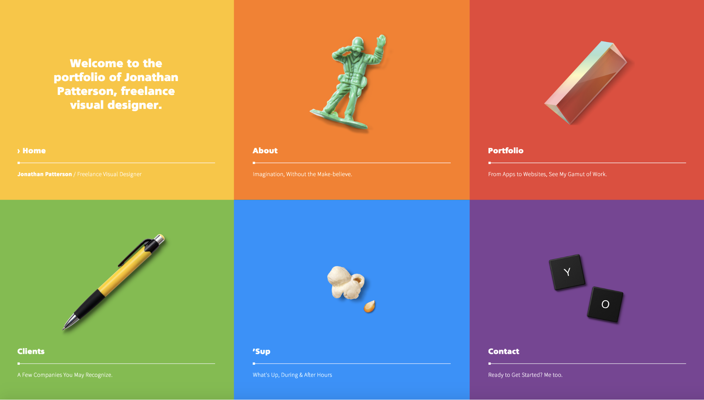
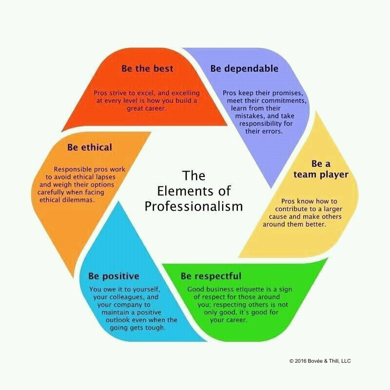
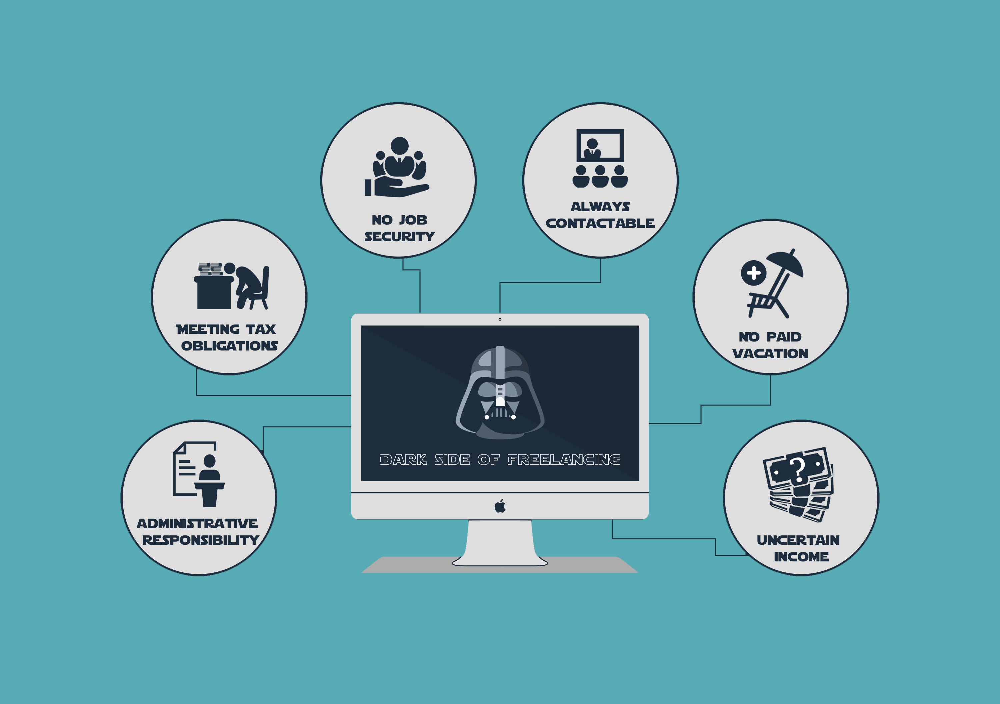
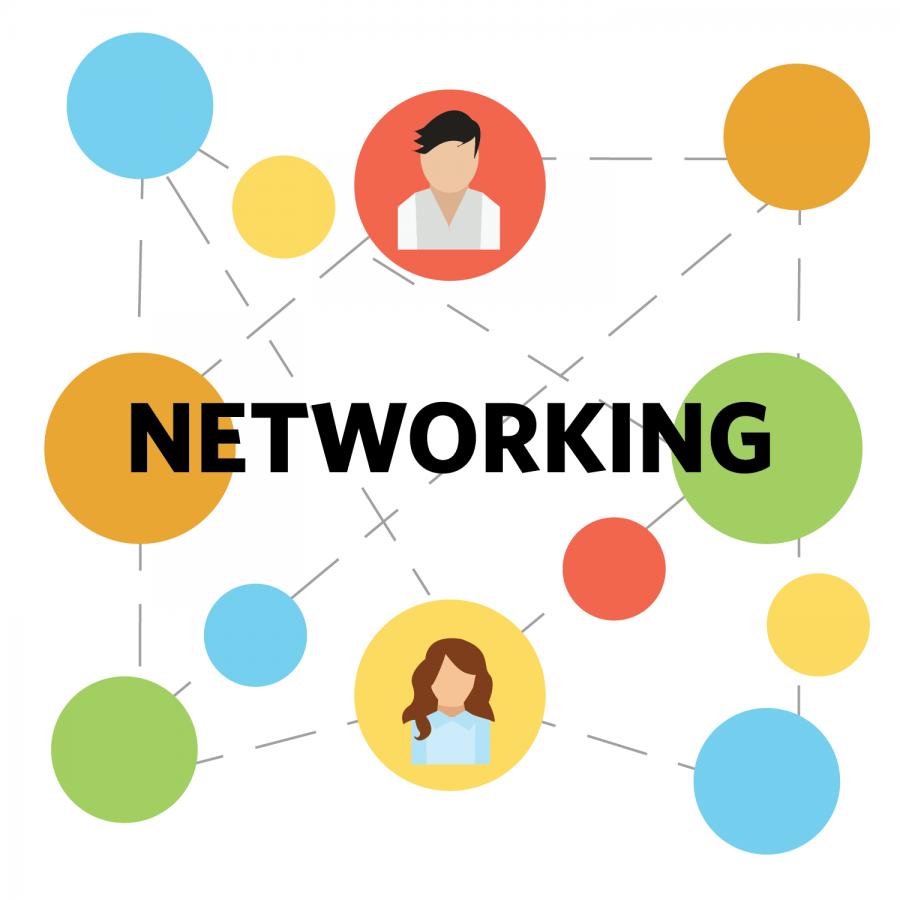

I don’t have a great and big portfolio, but when I will be adding things in, I will be trying to stick to some points. They are made up but also are talked about on a good amount of blogs about portfolios. The first thing I think that is quite important is – “Only include the best work”. This is something that might not always work, sometimes you need to change things up but In my opinion; projects that are not finished or poorly made should not appear on your showcase. I always like to look at my project and ask myself the question “would I be satisfied if I paid for this?”, when I know I will be giving things away I always try to make sure I like it first.
Another point is to mix things up, I think that this is very important; adding only 1 type of stuff can be boring and not making people stay and be interested in your work. With adding stuff to your portfolio you need to make sure the images are good quality ”All the hard work you put into your creations goes by the wayside if they are not presented properly”.
Keeping your portfolio simple and to the point is always nice, having people see your work straight away; well-presented can be a game changer. A complex portfolio can make the user find it hard to know what you were trying to show off. With a good simple portfolio has to come an easy navigation, user going through your portfolio with ease is benefiting. Something to keep in mind is that your portfolio is not only about the things you made. A good amount of info about your background story makes the user know what type of person you are.
Lastly you got to be yourself and don’t try to be someone else. Don’t copy other people’s projects, it’s important to stand out, and by coping others you will not. It’s good to learn from others and have sometimes something new, but make sure to reference them.
For this topic I used a presentation that our lecturer gave us and 3 different websites.
I will put links under this and the url if the link doesn't work.
Website 1 - https://mymodernmet.com/how-to-make-a-portfolio/
Website 2 - https://www.themuse.com/advice/4-secrets-to-building-a-portfolio-thatll-make-everyone-want-to-hire-you
Website 3 - https://www.creativebloq.com/portfolios/tips-portfolio-website-4137460
Firstly what is Professionalism; I have looked on a couple of sites, blogs and a presentation that my lecturer gave me. 2 very common quotes that I saw were “The conduct, aims, or qualities that characterize or mark a profession or a professional person” and “Worthy of or appropriate to a professional person; competent, skilful, or assured”. Generally I think these quotes are saying that depending what you do and how you act; you can be a professional or not be one. Becoming a professional in your industry is not easy, and it takes time, this cannot happen overnight or over couple of days. I think that this takes a lot of experience and knowledge. Going to college and University helps, I think that in your own time you might learn a lot more if it comes to coding, but in a college/university you can gain the base of becoming a professional.
I read about professionalism in a blog and there was a point made that I really liked. On the blog it said that you should always go by 6 steps which will help you go along your project a lot smoother. These 6 steps are: Integrity, Commitment, Responsibility, Preparation, Accountability and Punctuality. I will try to explain them in my own words and add something from myself.
1. Integrity – Being honest with your client, be honest if they are heading in the wrong direction, try to talk to them and maybe give advices. This might also strengthen the relationship between you and your client. Also be honest with yourself and do not take tasks that you cannot do, not managing the client expectations can be very unprofessional.
2. Commitment – Try to never rush a project, do your best; ask for more time if needed. Do not submit a project that is not completed or poorly made. You will be remembered if you produce a very poorly made project and if you produce a high quality one, it’s really good to make clients remember your name and pass it on to others. You don’t want them to ruin your reputation and spread a word for something that you could do a lot better but you did not commit enough.
3. Responsibility – Online security and privacy is really important and if you want to be a professional: you need to look at things like those. If you are a web developer you have to make sure that the website you produce is for everyone regardless of their abilities, such as blind person accessing the contents via sematic tags and proper page layout. Also if you are the professional do not wait for the client to ask questions, you should be familiar with some norms and give them advice on things they might not know about.
4. Preparation – The developer has to prepare in a way that they know what they are doing; I think that asking a lot of stupid questions is better than not asking any questions. The developer needs to know what the client wants to make sure that the client is happy at the end. Also the developer has to be up to date and leave enough time to finish the project and not be late.
5. Accountability – Evaluate yourself and the client. For example, Communication is really important. Find what was poorly made on both sides and try to improve and be ready for next clients. Make sure that the deadlines were met by both you and your client.
6. Punctuality – I think that this is a lot easier if you are a freelancer. Talking to your client face to face might also help. No one can always be on time, so being honest and asking for more time can be a lot better than rushing and giving in poorly made projects. It’s not always the case, there might be stuff said before starting the project, what will happen if one side is late. But punctuality is always good and it helps, try to ask for more time so you have spare to properly test and make the client happy
I think that most if not all creative industries have a code of conduct so keeping up with that and these 6 pillars will help you become professional in that industry and go about your tasks a lot smoother and faster.

For this topic I used a presentation that our lecturer gave us, a couple different websites, 2 blogs and a PDF file.
I will put links under this and the url if the link doesn't work.
Website 1 - http://www.happsolutions.com/2018/09/19/professionalism/
Website 2 - https://www.expertmarket.co.uk/web-design/ethical-responsibilities-web-developers-have
Blog 1 - https://cremedelatech.blogspot.com/2018/09/does-concept-of-professionalism-apply.html#comments
Blog 2 - https://b00348421.wordpress.com/blog/
Blog 3 - https://kennethyorke25.wixsite.com/portfolio/post/does-the-concept-of-professionalism-apply-to-the-creative-industries
PDF 1 - http://graduate.auburn.edu/wp-content/uploads/2016/08/What-is-PROFESSIONALISM.pdf
This is a very hard question and it probably depends on some things. For example the industry, if you are an Animator or a web developer then probably you would want to be a freelancer but this is not always the case. And so if you are some sort of designer then it might be harder for you to become one. Another case would be if you are unexperienced and new, I would say it is better to start off with a company and learn from them. It also depends on you, if you don’t like working alone then freelancing isn’t for you, unless you find people to do it with you and split the work. Freelancing is for a current project for some client, you are not a permanent employee. Usually you are paid for the whole project but it depends how you set it out.
There are always advantages and disadvantages for everything; I will try to go over them now.
Setting up – Setting it up for yourself can be very easy, you just have to let people look for you. A good way is to set up social media accounts and keep them active, LinkedIn is a good platform, other than that I probably depends on your industry but very popular ones are: Facebook, Instagram, Twitter. There are also probably some websites for animators and designers which I don’t know about. Creating a business card can also be helpful, giving it around to people at some event can make you stand out and people will now about you. Here are also some 2 websites that can help you become a freelancer -Link 1 and Link 2
Roles – Being a freelancer means that you not always do the same thing, you won’t have just 1 role, you will have to do everything that it is to that project. This can be a good thing as you will gain a lot of experience; you will learn new stuff and know what you are good at and what you are not so good at.
Getting Paid – As a freelancer you will be the one in charge, and you will speak to clients so you will know exactly what you are getting paid for, how much it is and when you will get it. Also all the money that you get goes to you. Sometimes when you get a task you might ask people for help, for example, an animator or a graphic designer. But that also depends if you need help or are you able to do it yourself.
Pick project – You know what you are good at so picking a project that you are comfortable with might be beneficial. Also you know how much time you have, so you can pick less complicated projects to do, for example over the weekend.
When – When you are a freelancer you can pick when you want to do projects, you know when you have holidays and days off. You don’t have to worry about not coming in to work. Also you can pick which hours you work and when you have time off.

Recognition – At the start it might be easy to set everything up, but it is definitely very hard to start off with work, having people recognise you and start giving you task will be hard. After a couple of projects it might be easier.
Payment – “Freelancers are not free, but 58% have experienced not being paid according to survey”. If you are unexperienced you will probably get less money for projects but it also doesn’t help if people will not pay you. As a freelancer it’s hard to make sure that someone will pay.
Working Alone – You are working alone and sometimes people like that but it will get boring someday, you need a lot of motivation and the only person you will be talking to is your client.
Unregularly working – You can never be 100% sure that you will have a project to do, there are a lot of developers and not enough projects so it’s hard to make the client pick you. You need to really stand out to show him you are better, it’s always good to have previous work shown and clients comments; showing how you did in the past. With less work there might a point that you will not be able to say “no” to a project, you might be worried that you will have no project for later so you will have to take projects even if you don’t want to.
Responsibility – Unsatisfied clients is a common thing, you have to deal with that. Also at the start you are probably the one looking for the clients so you are responsible for finding work for yourself. You also have the responsibility to learn new languages for some projects.
If you have the time and the money then it’s probably a good idea, it always depends if you like that kind of job but if you don’t like working under someone and be handled tasks by a manager then that is for you. It is probably not a good idea to be a freelancer just when starting with your industry but after some years of experience it could be a good thing, and also if it doesn’t work out you can always go back to working for someone. Starting off slow can also be good, maybe doing this as a side job, waiting to get people to know and recognise you, so you have enough clients to leave current job.
For this topic I have used these 3 blogs to help me:
Blog 1 - https://cremedelatech.blogspot.com/2018/09/does-concept-of-professionalism-apply.html#comments
Blog 2 - https://b00348421.wordpress.com/blog/
Blog 3 - https://kennethyorke25.wixsite.com/portfolio/post/does-the-concept-of-professionalism-apply-to-the-creative-industries
Talking to people with common interests – I think that this is as basic as it can get. The more people you know the better. This is very important in creative industries. It sometimes takes talking to the 1 person who takes you in and gives you a head start; gives you an internship or a part time job. Gives you a bit of experience which allows you to stay with them or find a better job and gain even more experience. “It is not always about your experience in the industry, willingness and passion to learn and the ability to confidently communicate and network with people goes much further”
There are many ways to network; I think the most common is social media and events. If you find an event nearby in your given industry, go to it and try to talk to people. If you are young or unexperienced, maybe luck will be on your side and someone will start a conversation with you. LinkedIn is a very good website for networking, create an account fill out all the necessary boxes and start talking to people. Find someone experienced and ask questions, show them your previous work; ask for advices. If they like what you do, they will start noticing you. Another platform can be Instagram or twitter, they can be very good if you like to post pictures, and you can be showing off what you done in the past or what you are working on right now. With a good description and hashtags people from your industry might start following your profile.

A very important personal skill to have is good communication; if you can talk to people they will like you and remember you. Always remember to show confidence, ask questions and remember to listen well. If you are not good at focusing or remembering stuff, bring a pen and paper, write things down, this might help you a lot. You can also try being funny. Try helping others, find people that need help in your industry, even if you don’t know what the solution is some tips might help them find the solution. Another good thing is to be prepared; know what to ask for and what is now common. Research before coming and be prepared.
1. Print off business cards and carry them with you everywhere you go, you never know when you will need them. Go to events and give them out. Take also other people’s and learn from them.
2. Create a LinkedIn account and keep it active, connect to new people, and message them. Make them notice you. Make sure you stay in touch with them and be aware of important events that are happening to them.
3. Go to events and meet people from your industry, ask questions and find connections. Take their contact information ale look what they done, maybe that could help you.
4. Update your skills, keep researching new stuff. Try to research what is good in your industry, and learn it. Show off projects from new skills.
5. Respond as fast as you can when someone messages you
In conclusion networking is very good and meeting new people in your industry is always beneficial. It can always help you, even if you need some feedback on your project it’s good to have people that know what they are doing and can help very fast. It can be hard at the start but after a couple of events it will get easier.
These are the websites that I used
Website 1 - https://www.topresume.com/career-advice/importance-of-networking-for-career-success
Website 2 - https://www.forbes.com/sites/biancamillercole/2019/03/20/why-networking-should-be-at-the-core-of-your-career/#5772601d1300
“Intellectual property refers to creations of the mind, such as inventions; literary and artistic works; designs; and symbols, names and images used in commerce.” - https://www.wipo.int/about-ip/en/
If you have intellectual property protection then it helps people from stealing or copying from you. Things that can be protected:
If you have any products or brands then the names of them can be protected
Any inventions that you have come up with
Designs or look of you products
Also everything you write, make or produce.
“Copyright, patents, designs and trademarks are all types of intellectual property protection. You get some types of protection automatically, others you have to apply for.”
Ip rights protection can be very beneficial as it stops people from taking thigs that you have wrote, made or produced. For example someone creates an image, and without IP someone else can take it and use it for their own projects or even sell it. With IP that image can be sold unto other people and then that person can use it or sell it further.
So the main purpose of intellectual property is to encourage the creation of wide variety of intellectual goods. The law gives people and businesses property rights to the information and intellectual good they create depending on the law and what is created, but usually for a limited period of time. This allows people to make profit on their creations
“The statue of monopolies (1624) and the British statue of Anne (1710) are seen as the origins of the patent law and copyright respectively, firmly establishing the concept of intellectual property
Acts and regulations”
Read more about Intellectual Property (IP), Here are some Websites:
Website 1 - https://www.bl.uk/business-and-ip-centre/articles/what-are-intellectual-property-rights
Website 2 - https://en.wikipedia.org/wiki/Intellectual_property
Website 3 - https://www.gov.uk/intellectual-property-an-overview
PDF 1 - https://www.wipo.int/edocs/pubdocs/en/intproperty/450/wipo_pub_450.pdf